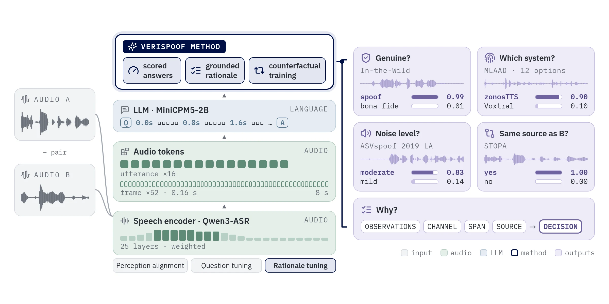
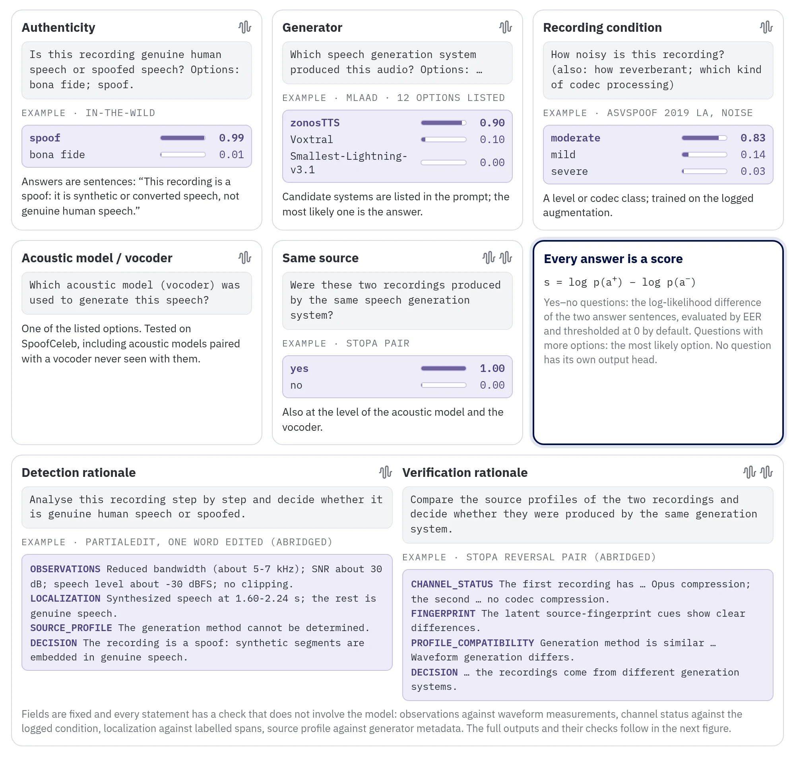

0.00 / 0.00 s
labelled synthetic span
span stated by the model
P(synthetic) per 0.16 s token
One-step answer
score = log p(spoof answer) − log p(bona fide answer)
Open audio LLM for speech forensics
VeriSpoof is one audio language model that tells you whether speech is a deepfake, which system made it, whether two recordings share a source, what the channel did to it, and why — in short lines that can each be checked against the audio.
One set of weights, no task heads: every answer is a sentence whose likelihood is the score.
Example gallery
Real test recordings, run offline through the released inference package. Play one, read the one-step answer and the rationale, and see each line checked against waveform measurements and dataset labels — including the ones the model gets wrong.
score = log p(spoof answer) − log p(bona fide answer)
score = log p(yes) − log p(no)
Audio: ASVspoof 2019 LA (ODC-By 1.0), PartialEdit (CC BY 4.0), HAD (CC BY 4.0),
CodecFake+ (MIT), DFADD (MIT); evaluation splits only, never used in training. Outputs: greedy decoding with the
released verispoof package, precomputed offline (credits).
How it works

A Qwen3-ASR (AuT) encoder hears an 8 s window. A learned mix of all 25 layers, adapted with DoRA, feeds a tokenizer with 16 utterance tokens (what is constant: the source) and 52 frame tokens of 0.16 s (what changes: where the fake is), with time marks every 0.8 s.
MiniCPM5-2B with LoRA reads the tokens. No question has its own head: the score is the likelihood of the model's own answer sentence, so it can be thresholded at any operating point.
s = log p(spoof answer)
− log p(bona fide answer)
Targets are not written by a teacher model. They are computed from the exact window the model hears, so each field has an independent checker:
OBSERVATIONS ↔ waveform measurementsCHANNEL_STATUS ↔ logged conditionLOCALIZATION ↔ labelled spansSOURCE_PROFILE ↔ generator metadataIn 20% of rationale examples the localization is reversed and only the decision that follows is trained. The model never learns to say something false about the audio; it learns that the decision must follow the stated evidence: 99.5% of decisions follow an edit form never seen in training.
Tokenizer + encoder DoRA learn detection and source questions with the LLM frozen.
LLM LoRA added; acoustic model, vocoder, condition and pair questions.
Detection and verification rationales plus counterfactuals; QT questions replayed.
Only 29.7 M of 2.85 B parameters are trained (tokenizer 17.85 M, encoder DoRA 3.24 M, LLM LoRA 8.60 M, per-token head 6 k). Base: official training splits of eight corpora plus three partial-spoof corpora (0.38 M utterances). Plus: the same recipe with twelve more corpora (4.0 M more utterances).

Results
Every line of the 14 official Speech-DF-Arena protocols, scored with the model's own answer. Pooled EER uses one threshold over all 2.34 M trials — the board's ranking.
27 systems on the public board plus both VeriSpoof models. Inserted alone, each model ranks among 28: Plus third, Base fourth.
Table 2 of the tech report. Teffic-Audio from its paper; ‡ from SpoofRadar, whose pooled EER covers other sets. Best per column in bold.
Both models beat every open-weight system on the published leaderboard (best: DF Arena 500M, 9.96%). Plus: ACC 95.96 · macro-F1 94.54 · mean set EER 1.65.
Numbers from the technical report; protocols, lists and scoring scripts in VeriSpoof-Bench.
Use it
# CUDA GPU with about 12 GB; weights download on first use
hf download AustinXiao/VeriSpoof-Plus --include "code/*" --local-dir verispoof
pip install ./verispoof/codefrom verispoof import VeriSpoof
model = VeriSpoof.from_pretrained("AustinXiao/VeriSpoof-Plus") # or "AustinXiao/VeriSpoof-Base"
model.detect("sample.wav") # {'label': 'spoof', 'score': log p(spoof) - log p(bona fide)}
r = model.explain("sample.wav") # grounded rationale + per-token synthetic probability
print(r["text"]) # OBSERVATIONS / CHANNEL_STATUS / LOCALIZATION / SOURCE_PROFILE / DECISION
r["decision"], r["spans"], r["token_prob"]
model.same_source("a.wav", "b.wav", level="generator") # also "acoustic_model", "vocoder"
model.compare("a.wav", "b.wav") # verification rationale
model.condition("sample.wav", attr="codec") # also "noise", "reverb"
model.generator("sample.wav", ["XTTS-v2", "Bark", "VITS"]) # candidates you supply# pip install "./verispoof/code[vllm]" · rationales for many files, about 46x faster in batches
from verispoof.vllm_backend import VeriSpoofVLLM
if __name__ == "__main__": # vLLM starts its engine in a separate process
m = VeriSpoofVLLM.from_pretrained("AustinXiao/VeriSpoof-Plus")
results = m.explain(["a.wav", "b.wav", "c.wav"]) # batched
pairs = m.compare([("a.wav", "b.wav"), ("c.wav", "d.wav")])Intended for research on deepfake detection, source tracing and explainable forensics. A forensic decision should combine this score with other evidence and human review. When deploying on a new language or domain, set the threshold on genuine speech of that domain.
Cite
@techreport{verispoof2026,
title = {{VeriSpoof}: Beyond Real or Fake with One Audio {LLM} for Speech Deepfake Detection, Source Verification, and Grounded Reasoning},
author = {Xiao, Yang and Dang, Ting},
institution = {The University of Melbourne},
type = {Technical Report},
year = {2026},
url = {https://github.com/swagshaw/verispoof/blob/main/tech_report.pdf}
}VeriSpoof weights and code: CC BY-NC 4.0 (non-commercial). The base models keep their own license: MiniCPM5-2B and Qwen3-ASR-1.7B, Apache-2.0.
Evaluation recordings, redistributed under their licenses: ASVspoof 2019 LA (ODC-By 1.0), PartialEdit (CC BY 4.0), HAD (CC BY 4.0), CodecFake+ (MIT) and DFADD (MIT). PartialEdit and DFADD build on VCTK (CC BY 4.0). Corpus papers are cited in the tech report.
Experiments used computational resources of the National Computational Infrastructure (NCI Australia) and of the University of Melbourne. Generative AI tools were used to assist with writing code, running and summarising experiments, and drafting and editing the report and this page; the authors reviewed and take responsibility for all content.
Yang Xiao, The University of Melbourne
yxiao9550@student.unimelb.edu.au